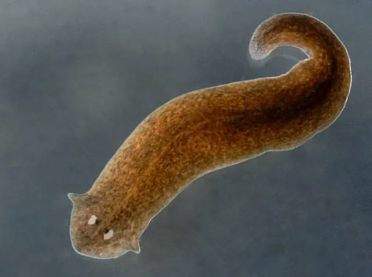
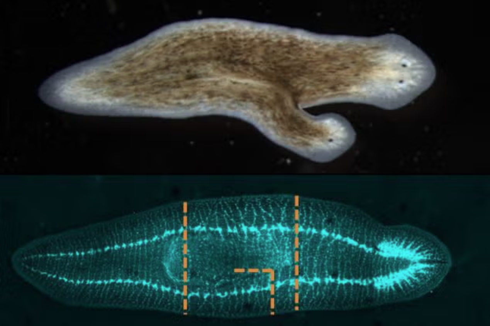
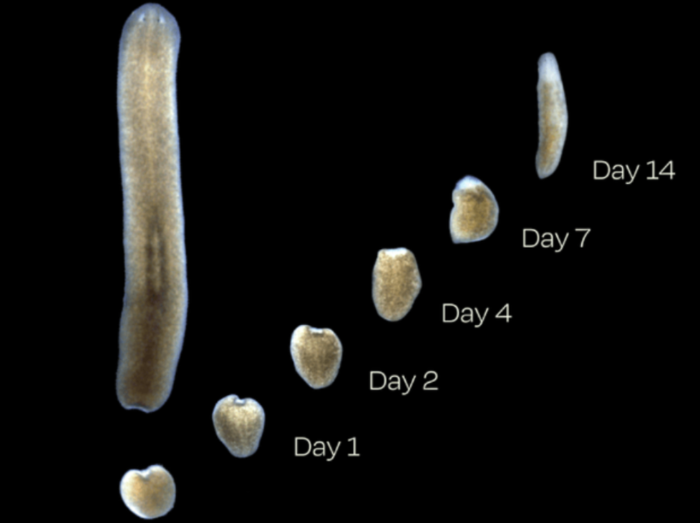
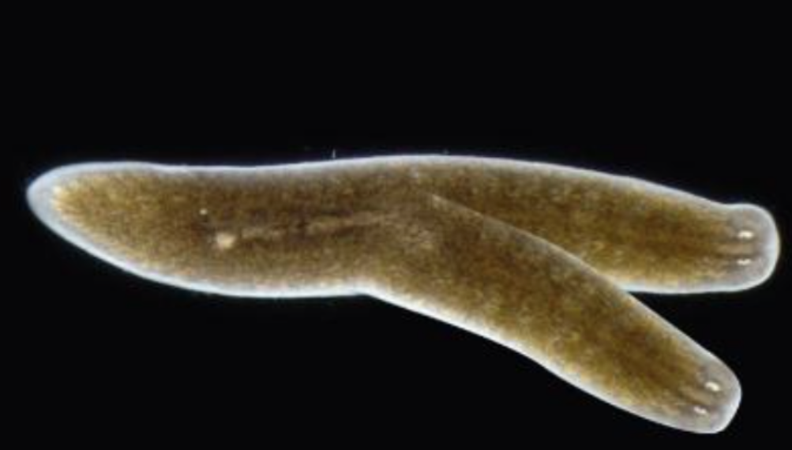
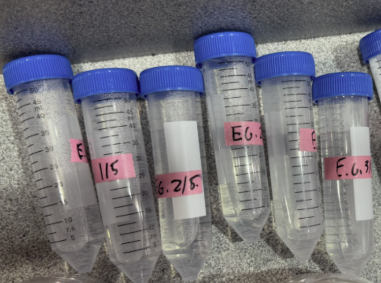

Planaria, more specifically Girardia tigrina are widely used as model organisms in biology. These planaria are known for their ability to regenrate full body parts. However, most current research of the effects of various compounds on the regeneration of such organisms is still limited, restricted mainly to caffeine. Theobroine, a compound found in chocolate, is also used in many pharmaceutical products and is structurally similar to caffeine. While the effects of caffeine on planaira regeneration are well characterized, this research aims to close that gap for theobromine.
This study aims to examine how various concentrations of theobromine in the medium of Girardia tigrina affect growth in uncut planaria and regenerative growth in experimentally cut planaria. Knowing which drugs support or slow cell regeneration is beneficial to medical researchers in fields such as stem cell treatment, neural repair, and tissue engineering. Planaria are also regarded as excellent ecological indicators for human stimulants such as caffeine or theobromine, to which the impacts of such substances on ecosystems can clearly be seen. Providing the general public with information on how such compounds affect biological systems is important to making clear decisions about one's health.


Planaria's unique ability is due to neoblasts: pluripotent adult stem cells that make up a sigmnificant portion of the planaria's cells. When an amputation occurs, the rate of the neoblast division is increased, and migration to the wound site is initiated. A mass of new tissue is then formed, called a blastema, in which the cells differentiate over many days to replace the body structure (Pellettieri et al., 2010). Planaria also undergo binary fission, a process in which the organism is split into a head and tail offspring. Fission is a process in which independent action is carried out by the anterior (front) and posterior (back) of the worm, with rhythmic pulsing observed at the anterior and adhesion at the posterior.
The main materials used in this research are listed below.
